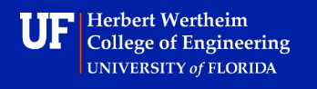

I am a recent graduate from the Herbert Wertheim College of Engineering at the University of Florida. I majored in Electrical Engineering and received my
bachelors degree in may of 2025. Electronics has been a long-time interest for me, so choosing to major in Electrical Engineering was an easy choice.
Currently I am seeking an entry level job in Electrical Engineering. I am interested in the power electronics field, a field of Electrical Engineering based
on high power DC or AC circuits, with a large influence on robitics, renewable energy, and electric vehicles. I enjoy hands-on tasks the most, like assembling
circuit boards or wiring, but I also enjoy computer based design processes, for example CAD or EDA
I spend my spare time tinkering with things, usually electronics, sometimes other mechanical devices. Regardless of electrical or mechanical I have a desire
to learn how things work and why things are the way that they are. Inspiration for a project usually comes from some salvaged part, I form a vision of what I think
I can do with that part, and everything stems from there. I love the creative design process, going from a pile of parts to a finished product is fun every step of the way.
Creating a pile of parts from a complete product is also lots of fun for me, I enjoy taking things apart as much as putting things together.
It is a chance to learn how somebody else designed and assembled something, a chance to discover new things, and at the end of the day I have a bunch of new parts
to be repurposed later!
Education

I graduated with my bachelors in Electrical Engineering from the Herbert Wertheim College of Engineering at the university of florida in May of 2025.
The University of Florida is a great school, during my time there I met many great people and got to experience lots of cool things. Despite the constant
construction and periodic lack of taste in architecture, the UF campus is beutiful and packed with things to discover.
Being a person that likes to learn by doing, the most meaningful classes that I took at UF were the design or project based ones, such as junior or senior design.
These two classes are not like typical lecture based classes, they are self guided design projects where you are the engineer.
There are some simple requirements to fulfill, but it is entirely on you to put the pieces together. This is something that I wish happened more in engineering classes,
the design process is how me and lots of other students learn the best.
Other classes that I took at UF included things like digital design or power electronics. Digital systems and power electronics are two parts or electrical engineering
that I like working in the most, there is something satisfying about digital circuits and the ability to manipulate data and do operations with a collection of
simple components. In a time when efficiency is more relevant than ever, the field power electronics is never dull!
The thing that I am most proud of from my time at UF and the thing that I will look back on the most is my contributions to a research lab in the mechanical and Aerospace
Engineering department. This lab was developing a product called the BathyDrone, with support from Aurego. The Bathydrone is a bathymetric mapping sustem in which a large
drone tows a small unpowered vessel equiped with sidescan sonar. Every day that I spent working with the team on this project was a joy, everybody shared the same interest
in engineering and the same desire to push the boundaries of what we were capable of.
Before attending the University of Florida I took classes at Santa Fe College as part of a program called Gator Engineering at Santa Fe. The goal was to allow students to
take genED classes at SantaFe before "transferring" to UF. Although not a typical route to get to UF it had a number of benifits for me, not the least of which being the
fact the Santa Fe costs roughly half as much as UF's in-state tuition. The other big advantage for me was smaller class sizes and a more close knit community, which really
improved the experienc of taking difficult classes like calculus, physics, and chemistry.